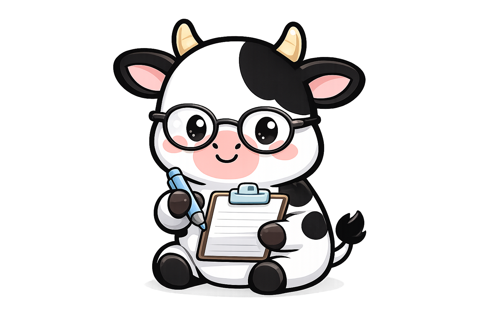

I found Finnsul the way their customer probably does — through a tab that had no business being open at 11pm. I'm Zaya: operations builder, trilingual, crossed three industries and one ocean. I write these because applying cold felt insufficient. This is what I actually found when I looked — and what I'd do about it.
I spent a weekend actually understanding what they built — not the marketing, the structure. Here's what stood out.
Finnsul is a "sippable self-care" brand built by Tarte founder Maureen Kelly and her sons Finn and Sully McDonough — the name is theirs, merged. Bootstrapped from Kelly's renovated garage, it sells zero-sugar drink-mix sticks that pair an electrolyte complex with nootropics — hydration for the body, clarity for the brain.
The insight is personal: the founders describe living with "37 tabs open at once." The product answers with Cognizin citicoline for focus, a B-vitamin stack, electrolytes, and zero sugar — caffeinated and caffeine-free, in flavors picked with the community. Customers agree: a 4.97-star rating on finnsul.com, and one-time-purchase packs were sold out at the time of this study.
Watching how they launched was the part that made me take this seriously. No media buy. No acquisition funnel. Four moves that only land if you actually understand where your customer is on a Tuesday in May — and what she needs right then.
The founding team built Tarte from a one-bedroom apartment to a Kosé majority acquisition and $105M+ in TikTok Shop revenue. That track record is execution evidence, not a crutch — it de-risks the bet and signals the brand values a real operational playbook. Finnsul gets the experience without the corporate weight.
Curated care kits landing with students at peak overwhelm — the product meeting its exact use case at its exact moment of need. Seeding aimed at a calendar, not just a follower count. Gen Z and millennials already drive 41%+ of US wellness spend; this put the product directly in their hands.
Instead of fighting the crowded fitness aisle, Finnsul seeded readers, students, and deep-work communities — places where focus is the identity. In a nootropics market projected to more than double to $14.8B by 2034, that's the white-space move nobody else in hydration made.
Flavors, merch, bottle colors — decided with the community, not for it. A Camp Poosh Sip Session and a multi-city Confidence Tour through Ulta stores turn buyers into co-authors. Retention by ownership, not by discount code.
My honest read on where Finnsul is and what compounds it. Five places where the market is already leaning toward them — all they need is the process to lean back. Each one sized with a real number so this isn't just a thought exercise.
Founder channels (~570K TikTok, ~288K Instagram) and a 4.97★ product have already proved demand. The compounding move is converting that reach into email, SMS, and subscription lists the brand owns outright — DTC subscribers are worth roughly 3–5× a one-time buyer, and Finnsul's subscription-first pricing is purpose-built for the conversion.
At the time of this study, one-time-purchase packs were sold out on finnsul.com — in a category growing ~20% a year, every out-of-stock week is measurable revenue waiting to be captured. A staged fulfillment plan (garage workflow documented as the gold standard, hybrid 3PL at volume thresholds) converts viral spikes into shipped orders without losing the hand-packed charm.
Ulta opened dedicated "Wellness by Ulta Beauty" boutiques in January 2026 — 58 brands, with Nutrition & Supplements as a core pillar — and Bloom Nutrition rode the same social-native path to 15,000+ retail doors and $175M in revenue within four years. The collab already put Finnsul on Ulta's site; a forecast-and-compliance-ready ops stack is what turns the standalone-shelf conversation into a yes.
Insurgent brands captured roughly 36% of all FMCG category growth in 2025 while holding under 2% share — almost entirely through community-driven volume. Camp Poosh and the Confidence Tour are exactly that motion. Event playbooks and a community CRM let ten events become fifty with the same handmade feel.
TikTok Shop's US GMV hit $15.1B in 2025, up 68% year over year — and Finnsul now sells across DTC, TikTok Shop, and collab retail. A single weekly heartbeat (velocity, inventory cover, CAC, subscription health) plus AI-assisted forecasting — shown to cut forecast error 20–50% — turns multi-channel speed into a durable advantage. Fittingly, the brand for 37 tabs gets its ops in one.
I don't pitch ideas I can't scope. This is 90 days of real work — sized for a bootstrapped family team of three, not an enterprise with a budget. Process first. Automation second. The humans keep doing the parts that made people love the brand; the system handles the repetitive 80%. (71% of CPG companies already use AI in at least one function — the edge is applying it with discipline, not just adopting it.)
Weekly velocity tracking per flavor and channel, days-of-cover targets, reorder points tied to supplier lead times, and a surge buffer policy for viral moments and holiday spikes — so sell-outs become a pricing choice, not a surprise.
Document the garage workflow as the gold standard, then a staged 3PL plan that kicks in at volume thresholds. Build the retailer compliance binder — COAs, certifications, EDI readiness — before the next retail call, not after.
Turn the magic into repeatable playbooks: a seeding-kit pipeline with stages and owners, an event-logistics template (venue, stock, staffing, follow-up), and a creator/community CRM that remembers every relationship.
A single weekly heartbeat: DTC velocity, inventory cover, subscription health, CAC by channel, retail sell-through. One page, every Monday, no tab-hunting. Decisions get faster because the facts show up on time.
Shadow every workflow as it actually happens. Map the order-to-door journey, the event pipeline, the data sources. Change nothing yet — earn the map.
SOPs for the top five workflows, reorder points live, the compliance binder started, the weekly heartbeat shipping every Monday — manually at first, on purpose.
Automate what the SOPs proved: the digest writes itself, the kit pipeline tracks itself, the PO drafts itself. Humans approve; the system remembers.
I didn't need to make this. But I wanted to see what the brand could look like in motion — so I concepted, art-directed, and generated a full spec campaign in an afternoon with AI tools. Stills and motion, in Finnsul's world. Zero production cost. An ops hire who can also make content is two hires in one.
This is what Monday morning would look like. I built the prototype so you don't have to take my word for any of it — click through the tabs. Numbers are illustrative; the structure is the actual proposal. The brand for 37 tabs deserves one tab that has everything.
14 personalized kit notes drafted from CRM context — favorite flavor, last conversation, what they're studying. Review, warm up, send. Handwritten feel, system memory.
"Velocity up 12% on creator momentum; Lemonade will dip below cover target Thursday — PO drafted. CAC crept up $1.20 as the finals audience cooled; subscription share gained 3pts, which more than offsets it. One flag: retreat-bar stock isn't allocated yet. Decision needed by Wed."
That's not a cute line. It's the reason this brand caught my attention — and the actual resume underneath the table on the right.
I've already done a version of this job. I built the operations backbone for a Denver healthcare services agency — 22 modules, trained 126 field staff, got to 100% adoption, zero support escalations. That was healthcare compliance, not CPG. Different industry, same work: map the chaos, write the process, train the people, automate the rest.

I built this: a full HIPAA-compliant operations platform — client records, document versioning, compliance alerts, caregiver credentialing, audit logs — from scratch, for a team that had nothing before. Concept to shipped product.
A few open questions I'd want to ask in a real conversation: